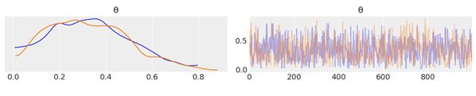
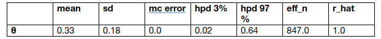
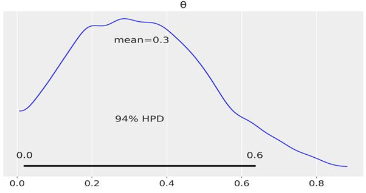
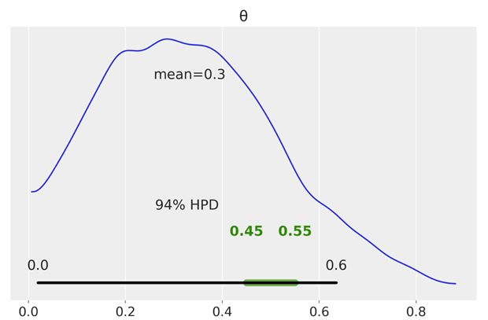
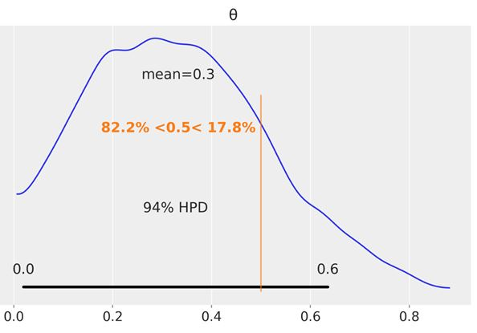

(Sponsors) Get started learning Python with DataCamp's free Intro to Python tutorial. Learn Data Science by completing interactive coding challenges and watching videos by expert instructors. Start Now!
How to build probabilistic models with PyMC3 in Bayesian
Updated on Jan 07, 2020
The basic idea of probabilistic programming with PyMC3 is to specify models using code and then solve them in an automatic way. Probabilistic programming offers an effective way to build and solve complex models and allows us to focus more on model design, evaluation, and interpretation, and less on mathematical or computational details.
This post is taken from the book Bayesian Analysis with Python by Packt Publishing written by author Osvaldo Martin. This book discusses PyMC3, a very flexible Python library for probabilistic programming, as well as ArviZ, a new Python library that will help us interpret the results of probabilistic models.
Probabilistic programming #
Bayesian statistics is conceptually very simple; we have the knowns and the unknowns; we use Bayes' theorem to condition the latter on the former. If we are lucky, this process will reduce the uncertainty about the unknowns. Generally, we refer to the knowns as data and treat it like a constant and the unknowns as parameters and treat them as probability distributions. In more formal terms, we assign probability distributions to unknown quantities. Then, we use Bayes' theorem to transform the prior probability distribution into a posterior distribution.
\begin{gather*} p(\theta) \end{gather*}
\begin{gather*} p(\theta | y) \end{gather*}
Although conceptually simple, fully probabilistic models often lead to analytically intractable expressions. For many years, this was a real problem and was probably one of the main issues that hindered the wide adoption of Bayesian methods.
The arrival of the computational era and the development of numerical methods that, at least in principle, can be used to solve any inference problem, has dramatically transformed the Bayesian data analysis practice. The possibility of automating the inference process has led to the development of probabilistic programming languages (PPL), which allows for a clear separation between model creation and inference.
PyMC3 primer #
PyMC3 is a Python library for probabilistic programming. The last version at the moment of writing is 3.6. PyMC3 provides a very simple and intuitive syntax that is easy to read and that is close to the syntax used in the statistical literature to describe probabilistic models. PyMC3's base code is written using Python, and the computationally demanding parts are written using NumPy and Theano.
Theano is a Python library that was originally developed for deep learning and allows us to define, optimize, and evaluate mathematical expressions involving multidimensional arrays efficiently. The main reason PyMC3 uses Theano is because some of the sampling methods, such as NUTS, need gradients to be computed, and Theano knows how to compute gradients using what is known as automatic differentiation.
Flipping coins the PyMC3 way #
Since we are generating the data, we know the true value of \(\theta\), called theta_real, in the following code. Of course, for a real dataset, we will not have this knowledge:
1 2 3 4 | np.random.seed(123)
trials = 4
theta_real = 0.35 # unknown value in a real experiment
data = stats.bernoulli.rvs(p=theta_real, size=trials)
|
Model specification #
Now that we have the data, we need to specify the model. Remember that this is done by specifying the likelihood and the prior using probability distributions. For the likelihood, we will use the binomial distribution with \(n==1\) and \(p==\theta\) , and for the prior, a beta distribution with the parameters \(\alpha==\beta==1\).
A beta distribution with such parameters is equivalent to a uniform distribution in the interval [0, 1]. We can write the model using mathematical notation:
\begin{gather*} \theta \sim Beta(\alpha,\beta) \\ y \sim Bern(n=1,p=0) \end{gather*}
This statistical model has an almost one-to-one translation to PyMC3:
1 2 3 4 | with pm.Model() as our_first_model:
θ = pm.Beta('θ', alpha=1., beta=1.)
y = pm.Bernoulli('y', p=θ, observed=data)
trace = pm.sample(1000, random_seed=123)
|
The first line of the code creates a container for our model. Everything inside the with-block will be automatically added to our_first_model. You can think of this as syntactic sugar to ease model specification as we do not need to manually assign variables to the model. The second line specifies the prior. As you can see, the syntax follows the mathematical notation closely.
The third line specifies the likelihood. The syntax is almost the same as for the prior, except that we pass the data using the observed argument. This is the way in which we tell PyMC3 that we want to condition for the unknown on the knowns (data). The observed values can be passed as a Python list, a tuple, a NumPy array, or a pandas DataFrame.
Pushing the inference button #
The last line is the inference button. We are asking for 1,000 samples from the posterior and will store them in the trace object. Behind this innocent line, PyMC3 has hundreds of oompa loompas singing and baking a delicious Bayesian inference just for you! Well, not exactly, but PyMC3 is automating a lot of tasks. If you run the code, you will get a message like this:
1 2 3 4 5 | Auto-assigning NUTS sampler...
Initializing NUTS using jitter+adapt_diag...
Multiprocess sampling (2 chains in 2 jobs)
NUTS: [θ]
100%|██████████| 3000/3000 [00:00<00:00, 3695.42it/s]
|
The first and second lines tell us that PyMC3 has automatically assigned the NUTS sampler (one inference engine that works very well for continuous variables), and has used a method to initialize that sampler. The third line says that PyMC3 will run two chains in parallel, thus we will get two independent samples from the posterior for the price of one.
The exact number of chains is computed taking into account the number of processors in your machine; you can change it using the chains argument for the sample function. The next line is telling us which variables are being sampled by which sampler. For this particular case, this line is not adding new information. Because NUTS is used to sample the only variable we have θ. However, this is not always the case as PyMC3 can assign different samplers to different variables. This is done automatically by PyMC3 based on properties of the variables that ensures that the best possible sampler is used for each variable. Users can manually assign samplers using the step argument of the sample function.
Finally, the last line is a progress bar, with several related metrics indicating how fast the sampler is working, including the number of iterations per second. If you run the code, you will see the progress-bar get updated really fast. Here, we are seeing the last stage when the sampler has finished its work. The numbers are 3000/3000, where the first number is the running sampler number (this starts at 1), and the last is the total number of samples. You will notice that we have asked for 1,000 samples, but PyMC3 is computing 3,000 samples. We have 500 samples per chain to auto-tune the sampling algorithm (NUTS, in this example). This sample will be discarded by default. We also have 1,000 productive draws per-chain, thus a total of 3,000 samples are generated. The tuning phase helps PyMC3 provide a reliable sample from the posterior. We can change the number of tuning steps with the tune argument of the sample function.
Summarizing the posterior #
Generally, the first task we will perform after sampling from the posterior is check what the results look like. The plot_trace function from ArviZ is ideally suited to this task:
 Figure 2.1.JPG
By using az.plot_trace, we get two subplots for each unobserved variable. The only unobserved variable in our model is \(\theta\).
Notice that y is an observed variable representing the data; we do not need to sample that because we already know those values. Thus, in Figure 2.1, we have two subplots. On the left, we have a Kernel Density Estimation (KDE) plot; this is like the smooth version of the histogram. On the right, we get the individual sampled values at each step during the sampling. From the trace plot, we can visually get the plausible values from the posterior. You should compare this result using PyMC3 with those from the previous chapter, which were obtained analytically.
ArviZ provides several other plots to help interpret the trace, and we will see them in the following pages. We may also want to have a numerical summary of the trace. We can get that using az.summary, which will return a pandas DataFrame:
az.summary(trace)

We get the mean, standard deviation (sd), and 94% HPD interval (hpd 3% and hpd 97%). We can use these numbers to interpret and report the results of a Bayesian inference. The last two metrics are related to diagnosing samples.
Another way to visually summarize the posterior is to use the plot_posterior function that comes with ArviZ. We have already used this distribution in the previous chapter for a fake posterior. We are going to use it now for a real posterior. By default, plot_posterior shows a histogram for discrete variables and KDEs for continuous variables. We also get the mean of the distribution (we can ask for the median or mode using the point_estimate argument) and the 94% HPD as a black line at the bottom of the plot. Different interval values can be set for the HPD with the credible_interval argument. This type of plot was introduced by John K. Kruschke in his great book Doing Bayesian Data Analysis:
az.plot_posterior(trace)
 Figure 2.2
Posterior-based decisions #
Sometimes, describing the posterior is not enough. Sometimes, we need to make decisions based on our inferences. We have to reduce a continuous estimation to a dichotomous one: yes-no, health-sick, contaminated-safe, and so on. We may need to decide if the coin is fair or not. A fair coin is one with a \(\theta\) value of exactly 0.5. We can compare the value of 0.5 against the HPD interval. In Figure 2.2, we can see that the HPD goes from ≈0.02 to ≈0.71 and hence 0.5 is included in the HPD. According to our posterior, the coin seems to be tail-biased, but we cannot completely rule out the possibility that the coin is fair. If we want a sharper decision, we will need to collect more data to reduce the spread of the posterior or maybe we need to find out how to define a more informative prior.
Region Of Practical Equivalence (ROPE) interval #
Strictly speaking, the chance of observing exactly 0.5 (that is, with infinite trailing zeros) is zero. Also, in practice, we generally do not care about exact results, but results within a certain margin. Accordingly, in practice, we can relax the definition of fairness and we can say that a fair coin is one with a value of \(\theta\) around 0.5. For example, we could say that any value in the interval [0.45, 0.55] will be, for our purposes, practically equivalent to 0.5. We call this interval a Region Of Practical Equivalence (ROPE). Once the ROPE is defined, we compare it against the Highest-Posterior Density (HPD). We can get at least three scenarios:
- The ROPE does not overlap with the HPD; we can say the coin is not fair
- The ROPE contains the entire HPD; we can say the coin is fair
- The ROPE partially overlaps with HPD; we cannot say the coin is fair or unfair
If we choose a ROPE in the interval [0, 1], we will always say we have a fair coin. Notice that we do not need to collect data to perform any type of inference. Of course, this is a trivial, unreasonable, and dishonest choice and probably nobody is going to agree with our ROPE definition. I am just mentioning it to highlight the fact that the definition of the ROPE is context-dependent; there is no auto-magic rule that will fit everyone's intentions. Decisions are inherently subjective and our mission is to take the most informed possible decisions according to our goals.
We can use the plot_posterior function to plot the posterior with the HPD interval and the ROPE. The ROPE appears as a semi-transparent thick (green) line:
az.plot_posterior(trace, rope=[0.45, .55])
 Figure 2.3.JPG
Another tool we can use to help us make a decision is to compare the posterior against a reference value. We can do this using plot_posterior. As you can see, we get a vertical (orange) line and the proportion of the posterior above and below our reference value:
az.plot_posterior(trace, ref_val=0.5)
 Figure 2.4.JPG
In this post we discuss how to build probabilistic models with PyMC3. To know, how to perform hypothesis testing in a Bayesian framework and the caveats of hypothesis testing, whether in a Bayesian or non-Bayesian setting, we recommend you to read Bayesian Analysis with Python by Packt Publishing.
Other Tutorials (Sponsors)
This site generously supported by DataCamp. DataCamp offers online interactive Python Tutorials for Data Science. Join over a million other learners and get started learning Python for data science today!

View Comments